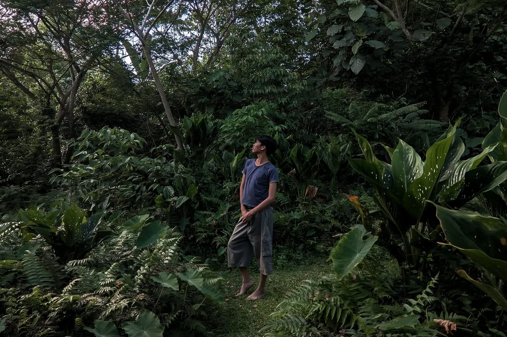

Hi there, and welcome to my digital space! I’m a student at the South East Asian Institute of Technology (SEAIT) with a deep-rooted passion for both the technical and creative sides of the digital world. For me, technology is all about bringing ideas to life. On the development side, I love diving into code to build dynamic, responsive websites from the ground up. Whether I'm crafting clean user interfaces with HTML, CSS, and JavaScript, or tackling backend logic with PHP and Node.js, I enjoy the challenge of turning complex problems into smooth, functional experiences. But my creativity doesn't stop at coding. With over two years of hands-on experience in video editing, I also have a sharp eye for visual storytelling. I thrive on taking raw footage and transforming it into engaging, polished media that captures the right mood and message. Ultimately, my goal is to bridge the gap between solid programming and compelling design. Feel free to grab a cup of coffee, take your time looking around, and explore the projects I've been working on. Whether you're here to check out my code, watch my video reels, or just say hello I'm glad you stopped by!